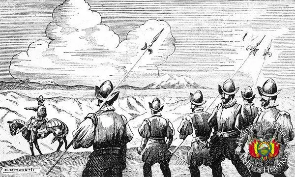
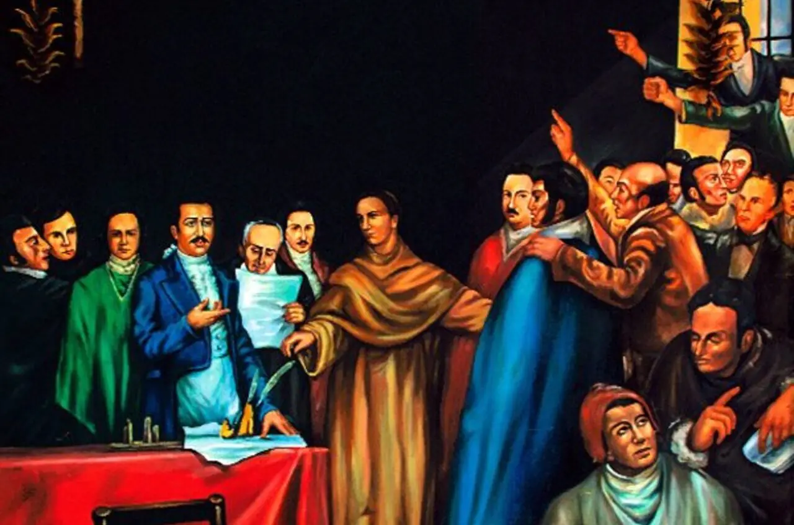
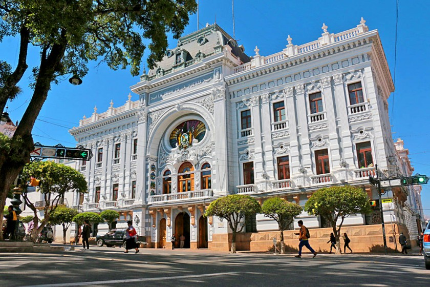
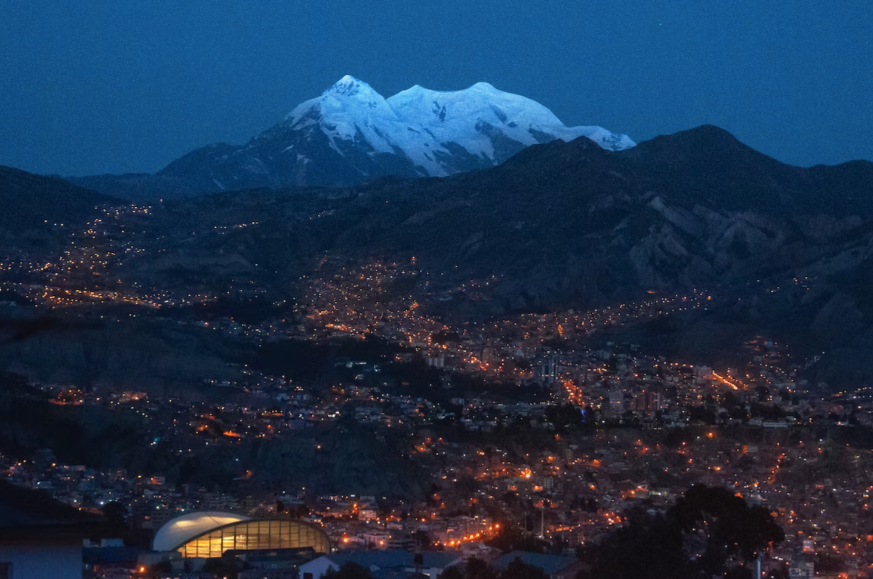

Examen de Jhonatan Mateo Quispe Lecoña

LA PAZ
La Septima Maravilla del Mundo
HISTORIA DE NUESTRA SEÑORA DE LA PAZ
- La Fundación Colonial (1548):
- La Revolución del 16 de Julio (1809):
- Sede de Gobierno (Época Republicana):
- La Paz Contemporánea:
La historia de La Paz (oficialmente Nuestra Señora de La Paz) se remonta a el 20 de octubre de 1548 por el capitán español Alonso de Mendoza. Creada como un símbolo de pacificación tras las guerras civiles entre los conquistadores, la ciudad creció rápidamente gracias a su ubicación estratégica en la ruta comercial entre Potosí y Lima.
LA FUNDACIÓN COLONIAL (1548):
Originalmente, la ciudad fue fundada provisionalmente en la localidad de Laja el 20 de octubre de 1548. Pocos días después, debido a su clima más templado y recursos, fue trasladada al valle de Chuquiago Marka (nombre que hace referencia a los sembradíos de oro). La ciudad se convirtió en un punto clave del Virreinato del Perú, sirviendo como zona de descanso y abastecimiento para los españoles que explotaban las riquezas mineras del cerro de Potosí.

LA REVOLUCIÓN DEL 16 DE JULIO (1809):
El descontento criollo y mestizo llegó a su punto cumbre a principios del siglo XIX. El 16 de julio de 1809, aprovechando la procesión de la Virgen del Carmen, un grupo de valientes patriotas liderados por Pedro Domingo Murillo protagonizó un levantamiento armado, destituyendo al gobernador español y conformando la Junta Tiahuanacota. Este suceso es recordado como uno de los primeros gritos libertarios de América Hispana. Aunque la revolución fue duramente reprimida y sus líderes ejecutados en la horca, la célebre proclama de Murillo: "La tea que dejo encendida nadie la podrá apagar", se convirtió en un símbolo de resistencia y lucha por la libertad.

SEDE DE GOBIERNO (EPOCA REPUBLICANA):
A finales del siglo XIX, tras la Guerra Federal de 1899, La Paz se consolidó como la sede de gobierno de Bolivia, albergando los poderes Ejecutivo y Legislativo. Este triunfo frente a la ciudad de Sucre marcó una nueva era de centralismo político y desarrollo económico en el departamento. Durante el siglo XX, la urbe expandió sus límites geográficos hacia el sur y hacia los extensos territorios de la vecina ciudad de El Alto.

LA PAZ CONTEMPORÁNEA:
A lo largo del siglo XX y XXI, La Paz ha sido el escenario principal de las transformaciones políticas, culturales y sociales más importantes de la historia boliviana, incluyendo la Revolución Nacional de 1952. Hoy en día, es una metrópoli vibrante, reconocida internacionalmente como una de las Nuevas Siete Ciudades Maravilla del Mundo. La urbe destaca por su geografía vertical única, su imponente guardián el nevado Illimani, su moderna e icónica red de teleféricos urbanos y una profunda identidad cultural que fusiona armoniosamente su pasado prehispánico, colonial y moderno.
